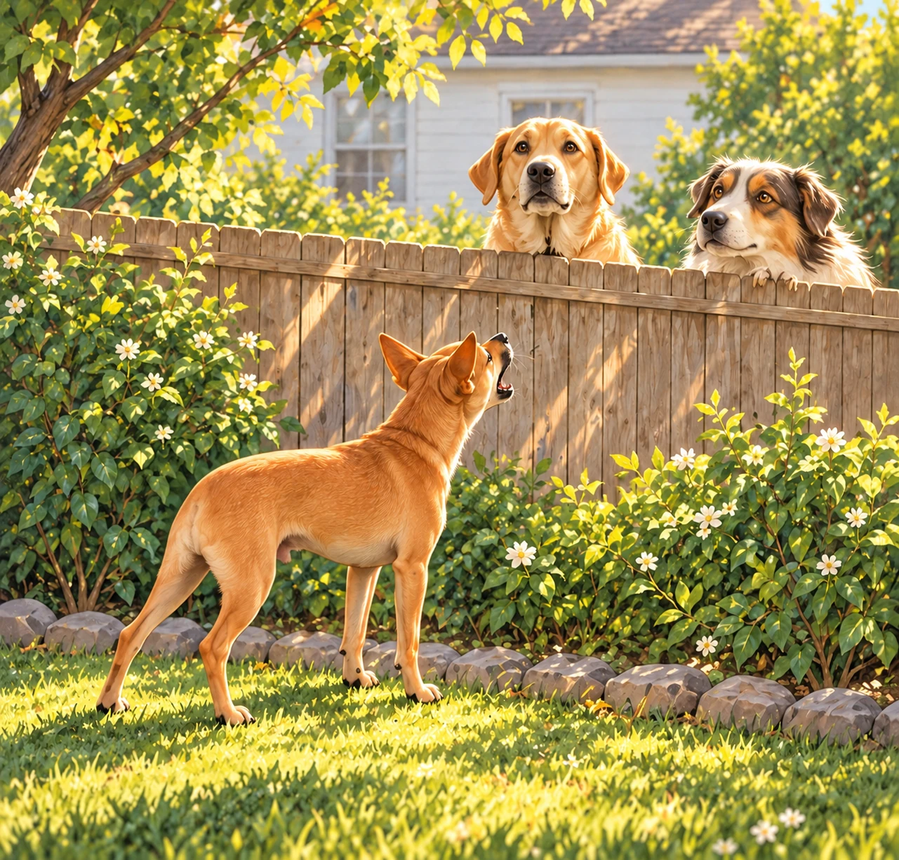
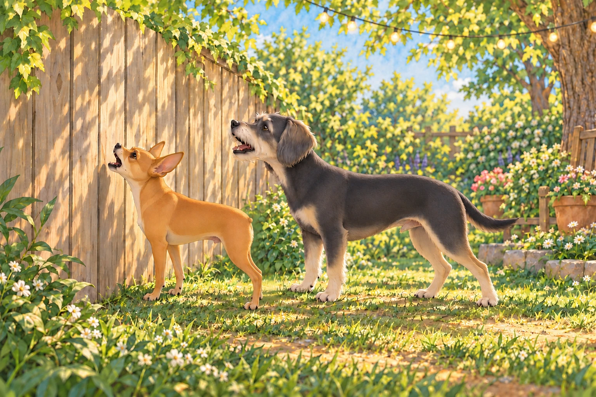
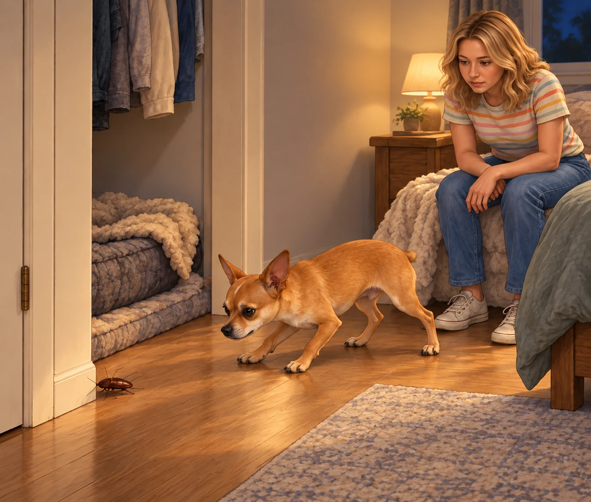
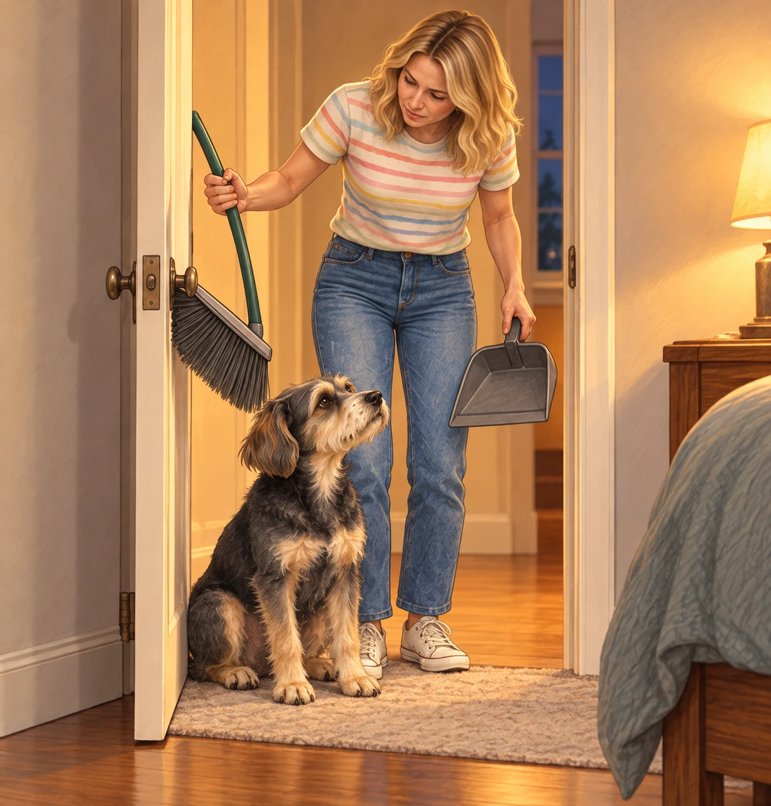
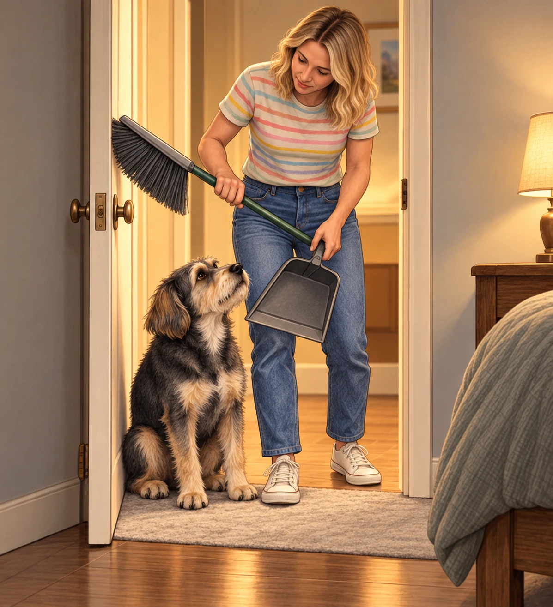
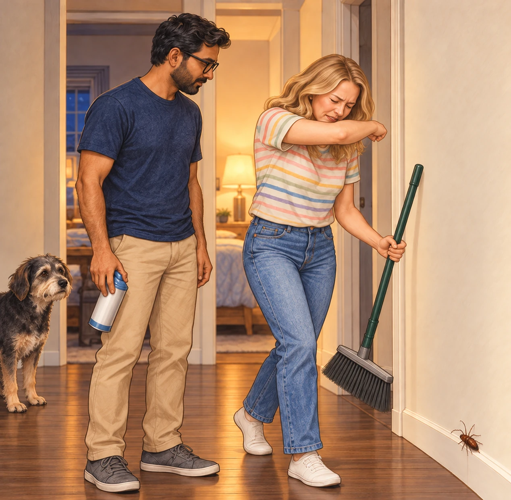
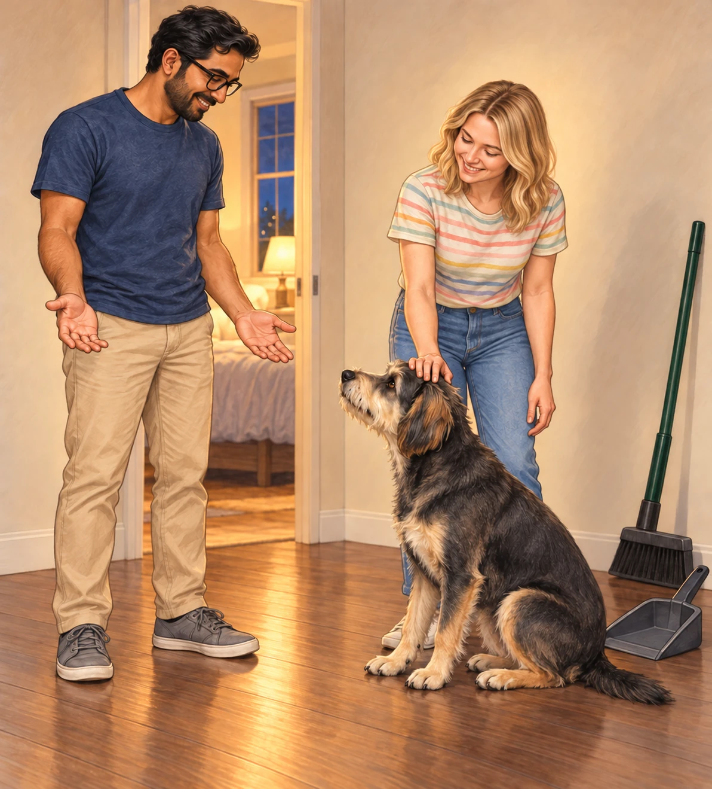
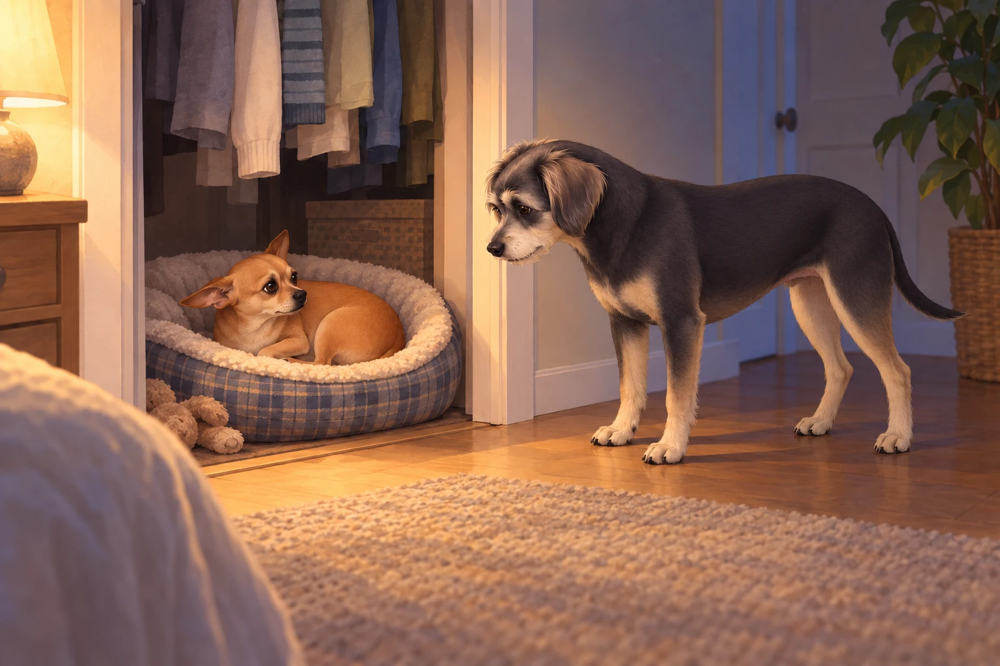
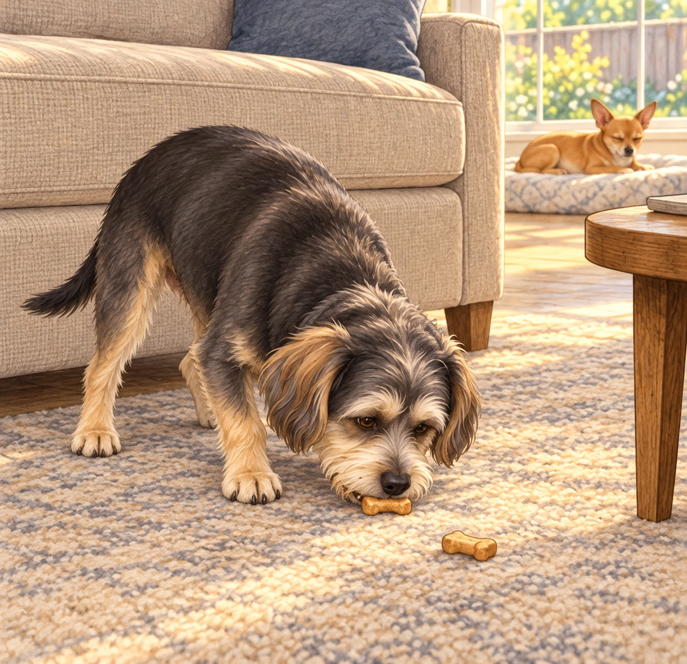

The Chief on Edge
For weeks, Neet had been basking in his Zen Master glow.
He meditated with acorns, tolerated Martha & Sally’s window-rattling barkathons, and even ignored the mailman’s audacious sock choice.
But something had shifted. Perhaps it was the humidity. Perhaps the planets. Perhaps Buddy stealing the last sweet potato treat.
Buddy declined to comment on the treat. He was still chewing the evidence.
He had plans for the afternoon: finish investigating a promising smell by the mailbox, then sleep beneath Sagar’s patio chair. Neet had spent the morning explaining how peaceful he was. Buddy hoped the demonstration would begin soon.
“Peace requires vigilance,” Neet said, tracking a leaf across the window.
“Does it require commentary?”
The leaf stopped. Neet waited for it to resume suspicious activity. Buddy closed one eye. He could begin the nap here if necessary.
Whatever the cause, Neet’s composure had frayed.
By Saturday afternoon, his eyes gleamed not with peace but with the manic sparkle of a commander looking for war.
The Bark-Off
The backyard was quiet, a rare ceasefire between kingdoms.
Heather watered the plants beneath her string lights, Buddy investigated the mailbox for chicken smells, and Sagar sipped iced chai.
Neet stood sentinel at the fence, ears up, chest puffed. Martha and Sally (a.k.a. The Bark Sisters) lounged on their side, blissfully silent.
And then…
He waited for a provocation. Martha yawned. Sally put her head down.
Neet gave them another moment to correct this.
Then Neet made the first move.
One sharp WOOF, aimed like a verbal javelin.
The Bark Sisters jolted upright, clearly confused.
Sagar, mid-sip: “Oh no.”
Heather: “That was Neet, wasn’t it?”
The neighbors’ dogs responded, not with words, but with an aria of outrage.
Neet countered with three quick barks, chest pressed against the fence like a heavyweight.

Buddy abandoned the mailbox. There was still no chicken, and at least this investigation had produced a result.
Swept up in the chaos, he contributed with his signature line:
“Best day ever!”
What followed could only be described as The Great Suburban Bark Opera.

Windows shook. Birds evacuated. Somewhere, a toddler dropped their juice box.
When Sagar set down his chai and crossed the patio to restore order, Neet instantly pivoted to meek mode — ears back, head tilted, the picture of misunderstood innocence.
Buddy, tail wagging at nuclear intensity, tried to play it off: “We were… rehearsing? For the talent show?”
Neet looked at him. Buddy gave one small, unhelpful encore.
But the damage was done. The Bark Sisters were still going three arias deep, their humans shouting “QUIET!” from the porch.
All because General Neet broke Zen to start a fence-line feud.
Buddy’s afternoon had become very loud. He tried one firm bark to tell everyone that the performance was over. Martha answered. Sally answered Martha. Neet answered both.
“That was a closing announcement,” Buddy said.
“Then stop announcing,” said Neet, and barked again.
Sagar opened the back door and called them inside. Buddy hurried through, pleased that someone had finally found the volume control. Neet followed backward, keeping his eyes on the fence until Heather rested a hand beside his shoulder and turned him around.
The door shut. Outside, the Bark Sisters continued without their supporting cast. Buddy’s perfect chair-shadow lay empty.
He looked at Neet. “We have been removed from our own afternoon.”
The Peace Offering
After a while, Sagar let them back onto the patio. Neet went straight toward his post. Buddy intercepted him with a ball.
“Different activity,” Buddy said around it.
Neet inspected the ball. “Whose side is it on?”
“Ours. Obviously.”
Buddy had a better idea than arguing. The Bark Sisters could see the ball through the fence. A game might make them forget the opera. He set it down near the slats and nudged it forward.
It struck the wood with a hollow thunk.
Martha barked at the ball. Sally barked at Buddy. Neet inhaled with professional excitement.
Buddy planted a paw on the ball before it could strike again. He had offered peace and discovered percussion.
“No,” he told Neet. “We’re moving the game.”
He picked it up and carried it back to Sagar’s chair. Neet followed, still looking over his shoulder, determined to inspect whatever his subordinate was concealing.
Buddy put the ball between his forepaws and lay down. There would be no rolling it toward anyone. No invitations. No announcements.
Neet waited for the mission briefing.
“This is it,” Buddy said.
From the chair, Sagar lowered a hand and rubbed Buddy’s ear. Heather brought her watering can back to the patio and sat beside him. Neet stood between the two chairs, considered the distant fence, then settled where he could watch it without getting up.
The Bark Sisters eventually ran out of things to answer. Buddy let his chin drop onto the ball. His nap had survived, somewhat dented.
The Night of the Roach
By evening, the household had returned to calm.
Heather prepared for bed, humming softly. The tune ended in a scream.
Heather froze mid-step, eyes locked on the bedroom wall.
There, sauntering with shameless antennae, was a giant roach, as if auditioning for a horror movie.
Heather: “SAGAR. NOW.”
Sagar (arriving at speed): “What’s wrong?”
Heather (whisper-shouting): “It’s… it’s THERE.”
The roach twitched a leg. Heather nearly levitated onto the bed.
Neet appeared at the doorway. At last, an actual security incident, complete with witnesses. He stepped forward and gave the intruder a low warning growl.
The roach kept walking.
Neet tried the tone he used on the mail truck. The roach turned toward the closet.
That was where his bed was.

He could advance and defend it. He could wait for reinforcements. Then Heather made another small, appalled sound, and Neet chose a third option: reach the bed first.
He slipped through the closet door and burrowed behind the fold of his blanket. From there, he could hear everything. No one could require him to look at it.
Buddy arrived just in time to see the general’s hindquarters disappear.
“Are we defending that room or moving into it?”
The blanket did not answer.
The Improvised Arsenal
Sagar, tactician at heart, scanned the room like a general surveying the battlefield.
He needed containment. Speed. Authority.
Buddy decided containment was his part. He sat squarely in the bedroom doorway. If the roach wanted to leave, it would have to negotiate with him.
Unfortunately, so would everyone else.
Sagar stepped around him, considering what to fetch. Heather reached past Buddy for the broom she had left in the hall, caught its bristles against the doorframe, and had to turn it sideways.
“Buddy, sweetheart. Make a little room.”

He shifted six inches. She still couldn’t bring the dustpan through.
Buddy looked from her hands to the doorway. His excellent blockade had captured Heather.

He backed all the way into the hall. Heather stepped through freely, broom in one hand, dustpan in the other. Buddy stayed beside the wall, resisting the powerful urge to supervise from the middle.
The hallway was useful too, he decided. It had a better escape route.
In a flash of genius— or lunacy— Sagar sprinted to the garage and returned wielding… Wasp & Hornet Spray.
Heather: “SAGAR, IT’S A ROACH.”
Sagar: “Better to overkill than underkill.”
Heather looked from the can to the insect. “Did you bring anything for this species?”
One dramatic PSHHHHHHTTTT.
The roach staggered like it had taken a Shakespearean dagger.
The walls glistened in chemical rain.
Heather, coughing, swapped in with broom and dustpan: “Move. Let me finish this properly.”

In a synchronized routine, she swept the roach into the pan, carried it at arm’s length, and handed it off to Sagar like a biohazard baton.
Sagar, grim-faced, disposed of the carcass at the far corner of the backyard.
“May the kingdom know peace again.”
Heather leaned the broom against the wall and took one long breath. Sagar returned with empty hands. Buddy checked them, then checked the dustpan, before allowing himself to sit comfortably.
She touched his head as she passed. “Thank you for moving, sweetheart.”
Buddy had wanted to stop the whole incident. He had managed to stop being part of the obstruction. Given the evening’s competition, he felt this qualified as a success.

The Interrogation of the General
But then came the question neither wanted to voice.
Heather, whispering: “How did a roach get inside? Isn’t that Neet’s job?”
Sagar, nodding gravely: “Chief of Perimeter Security. Sole mandate: prevent intrusions.”
They looked around.
Where was Neet?
Answer: hiding in his closet bed, curled in an awkward loaf of shame.
The closet door cracked just enough to reveal his guilty eyes.
When Sagar opened it, Neet performed the full guilty face package: ears drooped, tail tucked, avoiding eye contact like a politician after a scandal.
Heather: “All that barking this afternoon, and now you’re off duty?”
Neet blinked.
Buddy (helpfully): “To be fair, it was a really big roach.”
Neet edged farther into the bedding. At last, a witness for the defense.

“And very quiet,” Buddy added.
Neet stopped looking at him.
The Demotion
The tribunal convened immediately in the bedroom.
Heather sat on the floor outside the closet, leaving its entrance open. Sagar took the edge of the bed. Buddy occupied a place near Heather’s knee; after the doorway incident, he was careful to leave a clear path.
Neet remained on his blanket. He could see everyone from there. Nobody reached in to haul him out, which somehow made the proceedings harder to dismiss.
He had barked at dogs doing nothing and hidden from a bug doing quite a lot. Buddy had even managed to help by moving aside. Neet wished the record contained less of this evening.
Charges: dereliction of duty, starting an international bark war, and failure to intercept enemy bug forces.
Verdict: guilty.
Sentence: 0.25-star deduction.
Neet’s chest puffed in protest. “I am a 4.75-star general! I—”
Sagar: “Not anymore. You are officially a 4.25-star general.”
The silence was deafening.
Buddy gasped audibly. “They can DO that?!”
He shut his mouth before anyone remembered the encore.
Sagar looked at him anyway. “And you. No more joining in.”
Buddy lowered his chin. Fair. His peace negotiations had required a surprisingly large amount of barking.
Neet backed into his closet bed. Buddy glanced from him to Sagar, trying to make the new number fit the sentence.
“The general lost a quarter star,” Neet muttered. He was not accepting questions.
Heather smoothed the blanket’s folded edge, stopping short of disturbing him. Sagar held out his hand. Neet looked at it for a long moment, then stretched his neck just far enough to receive his usual ear scratch.
He withdrew afterward. The star remained lost. The scratch had still belonged to him.
Epilogue: A Kingdom in Question
By Sunday morning, things had settled.
The Bark Sisters were still holding grudge concerts at the fence.
Wall-E the robot vacuum looked smug, as if enjoying Neet’s downfall.
Buddy set off to console Neet with two snacks.
The first was his, which made eating it perfectly reasonable. The second needed carrying, and carrying required his mouth. At the corner of the couch, this distinction became difficult to maintain.

By the time he reached the window, both had disappeared. He sat beside Neet anyway.
“I brought moral support,” Buddy said.
Neet opened one eye at the crumbs in his beard.
“What’s left of it,” Buddy admitted.
And Neet?
He meditated beneath the window, eyes closed, paws folded.
He made room for Buddy without opening his eyes. Tomorrow, he would plot redemption.
Because no one stays at 4.25 stars forever.